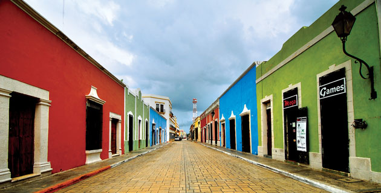
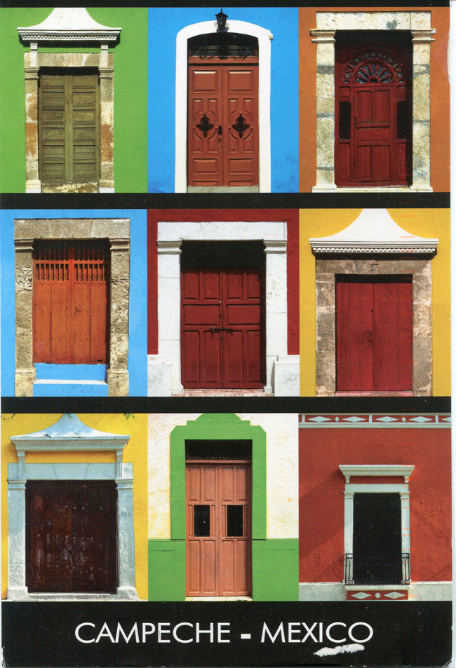

Campeche forma junto a los estados de Quintana Roo y Yucatán la península del mismo nombre que desprende reminiscencias históricas de los mayas y de los conquistadores y piratas que alimentan tantos libros de historia y novelas de aventuras. Al sur cierra la frontera con dos países vecinos, Belice y Guatemala, primos hermanos en clima y numerosos acontecimientos históricos.

Su ubicación abrigada en el Golfo de México la ha hecho privilegiada para ansiada hasta el punto de sufrir ataques, rapiña y saqueos por parte de piratas y corsarios con patente de corso en convulsos momentos en los que el Caribe era un tablero de ajedrez. Los bastiones de la capital del estado son la huella más significativa del interés que despertaban los recursos de Campeche.
Menos excavada que otras zonas del sur de México, Campeche tiene aún que sacar a la luz muchos yacimientos arqueológicos que permanecen ocultos o pendientes de estudiarlos. Calakmul, Edzná, Jaina, Becán, El Hormiguero, Chicanná o Xpujil son algunos representativos pero el abanico es inmenso.
Su boyante economía durante la época colonial era alimentada por el comercio marítimo con la metrópoli, pero también con otros puntos del Caribe, las Antillas o Veracruz. Razón por la que en los astilleros de Campeche repicaban las herramientas de los maestros navales que fabricaban barcos sin parar.
El asedio de las potencias rivales al reino de España, Francia, Inglaterra y Holanda intentaba mermar el aprovechamiento que los españoles hacían de los recursos del Yucatán, lo que provocó batallas navales y hundimientos de barcos que hoy forman un cementerio de pecios bajo el mar, siendo una de las zonas de mayor riqueza histórica submarina del mundo. Hoy en día son otro atractivo turístico para llevar a cabo inmersiones en los restos de las poderosas flotas navales que el mar tragó.
La ciudad de San Francisco de Campeche, se podría explicar a través de su fisonomía, y de su recinto amurallado que presenta bastiones, muros, torres de vigilancia y puertas que trataban de resistir los interminables ataques de los piratas como el hostigador Sir Francis Drake, el pertinaz Henry Morgan, el corsario Mansvelt o Laurent Graff, conocido como Lorencillo. Las huellas del pasado tienen forma de las piedras que revestían fuertes como los de San José el Alto, el de San Miguel o el Baluarte de San Carlos. Siendo la única ciudad colonial amurallada de todo México, en su perímetro de 2,7 kilómetros y forma hexagonal perduran seis de los ocho baluartes, dos grandes puertas y dos de los fuertes defensivos de la ciudad.
La en otro tiempo ciudad inexpugnable se abre hoy al turismo aprovechando cada uno de sus monumentos para presumir de museos, parques y jardines, abierta al mar y presumiendo de ser una de las ciudades más antiguas de la república mexicana. El paseo por el malecón, acercándonos a los edificios emblemáticos de la ciudad colonial que siguen en pié como el Astillero, la Aduana, la Audiencia, o la Catedral nos permite convertirnos en un un vigilante más de la ciudad amurallada y nos regala una sensación maravillosa en una de las consideradas ciudades más limpias de México.Campeche suele ser el punto de partida para iniciar la ruta arqueológica del estado, visitando yacimientos como los de: Calakmul, Edzna, Jaina, Becán, Chicanná, Xpujil
